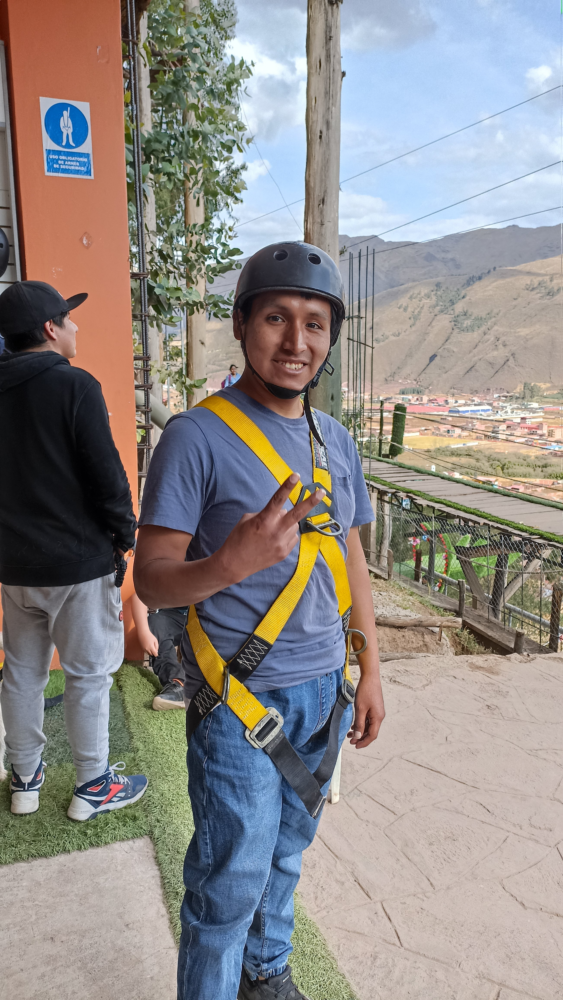

Me gusta mucho el trekking y andar en bicicleta, más cuando son largas distancias, otros de mis gustos que se relacionan un poco son los deportes de aventura, algunos deportes que realice fueron rappel, canopy, cuatrimoto, columpio extremo y el que más adrenalina me generó fue el puenting, aun hay muchos deportes que quisiera probar pero poco a poco los iré realizando todos jeje
